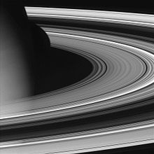
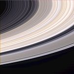

Saturno è il sesto pianeta del sistema solare in ordine di distanza dal Sole ed il secondo pianeta più massiccio dopo Giove. Saturno, con Giove, Urano e Nettuno, è classificato come gigante gassoso, con un raggio medio 9,5 volte quello della Terra e una massa 95 volte superiore a quella terrestre.
 Il nome deriva dall'omonimo dio della mitologia romana, omologo del titano greco Crono. Il suo simbolo astronomico è una rappresentazione stilizzata della falce del dio dell'agricoltura e dello scorrere del tempo.
Saturno è composto per il 95% da idrogeno e per il 3% da elio a cui seguono gli altri elementi. Il nucleo, consistente in silicati e ghiacci, è circondato da uno spesso strato di idrogeno metallico e quindi di uno strato esterno gassoso.
I venti nell'atmosfera di Saturno possono raggiungere i 1 800 km/h, risultando significativamente più veloci di quelli su Giove e leggermente meno veloci di quelli che spirano nell'atmosfera di Nettuno.
Il nome deriva dall'omonimo dio della mitologia romana, omologo del titano greco Crono. Il suo simbolo astronomico è una rappresentazione stilizzata della falce del dio dell'agricoltura e dello scorrere del tempo.
Saturno è composto per il 95% da idrogeno e per il 3% da elio a cui seguono gli altri elementi. Il nucleo, consistente in silicati e ghiacci, è circondato da uno spesso strato di idrogeno metallico e quindi di uno strato esterno gassoso.
I venti nell'atmosfera di Saturno possono raggiungere i 1 800 km/h, risultando significativamente più veloci di quelli su Giove e leggermente meno veloci di quelli che spirano nell'atmosfera di Nettuno.
Saturno possiede un sistema di anelli planetari, composti da milioni di piccoli oggetti ghiacciati, della grandezza che varia dal micrometro al metro, orbitanti attorno al pianeta sul suo piano equatoriale, e organizzati in un anello piatto. Poiché l'asse di rotazione di Saturno è inclinato rispetto al suo piano orbitale, anche gli anelli risultano inclinati. Questa natura "granulare" degli anelli fu dimostrata per via teorica fin dal 1859 dal fisico scozzese James Clerk Maxwell. Gli anelli iniziano ad un'altezza di circa 6600 km dalla sommità delle nubi di Saturno e si estendono fino a 120 000 km, poco meno di un terzo della distanza Terra-Luna. Il loro spessore è mediamente pari ad appena 10 metri.  La loro scoperta è dovuta a Christiaan Huygens, nel 1655; in precedenza già Galileo Galilei aveva notato delle insolite protuberanze ai lati del pianeta, ma la scarsa potenza del suo telescopio e la particolare posizione di Saturno all'epoca - con gli anelli disposti di taglio per un osservatore terrestre, e quindi difficilmente visibili - non gli avevano permesso di distinguerne la forma con chiarezza. Gli anelli sono divisi in sette fasce, separate da divisioni quasi vuote. L'organizzazione in fasce e divisioni risulta da una complessa dinamica ancora non ben compresa, ma nella quale giocano sicuramente un ruolo i cosiddetti satelliti pastori, lune di Saturno che orbitano all'interno o subito fuori dell'anello. L'origine degli anelli è sconosciuta. Ci sono due ipotesi principali al riguardo: che siano il risultato della distruzione di un satellite di Saturno, ad opera di una collisione con una cometa o con un altro satellite, oppure che siano un "avanzo" del materiale da cui si formò Saturno che non è riuscito ad assemblarsi in un corpo unico. Parte del ghiaccio della parte centrale degli anelli proviene dalle eruzioni del criovulcanismo di Encelado. In passato, gli astronomi pensavano che gli anelli si fossero formati assieme al pianeta miliardi di anni fa, tuttavia studi più recenti sembrano suggerire che l'età degli anelli sia probabilmente solo di alcune centinaia di milioni di anni. La composizione degli anelli principali, i primi quattro scoperti, anello A, B, C e D è per più del 99% di acqua pura in forma di agglomerati di ghiaccio, che li dota di una brillantezza notevole, dalla grandezza variabile mediamente tra 1 centimetro e 10 metri. Lo spessore degli anelli varia da 10 metri a un chilometro, apparendo quindi sottili all'osservazione. La densità di queste particelle varia da anello ad anello e anche all'interno dell'anello stesso, passando da valori di 40-140 grammi per centimetro quadrato a valori di circa zero in quelle che vengono definite divisioni o separazioni: spazi vuoti che separano gli anelli o all'interno di un anello, creati probabilmente da un gioco di risonanze gravitazionali dei satelliti pastori.  Alcuni agglomerati di ghiaccio più massicci possono alterare lievemente l'uniformità dell'anello. Agglomerati dell'ordine di centinaia di metri vengono definiti "minilune" (moonlet in inglese) e non sono visibili al telescopio e nemmeno alle sonde che fino ad'ora hanno visitato il pianeta, bensì creano delle perturbazioni che generano dei giochi di luce e ombra visibili solo in determinati periodi dell'anno saturniano. La NASA stima che gli anelli potrebbero "nascondere" milioni di minilune. Nell'ottobre del 2009 grazie al telescopio spaziale Spitzer è stato scoperto il più grande anello di Saturno mai osservato in precedenza. Questo enorme anello si trova alla periferia del sistema di Saturno, in un'orbita inclinata di 27º rispetto al piano del sistema dei sette anelli principali. Il nuovo anello, che si ritiene sia originato da Febe, è composto di ghiaccio e di polvere allo stato di particelle alla temperatura di -157 °C. Pur essendo molto esteso questo anello è rilevabile solo nello spettro infrarosso, perché non riflette la luce visibile. La massa dell'anello comincia ad una distanza di circa 6 milioni di chilometri dal pianeta e si estende fino a 11,9 milioni di chilometri. La scoperta potrebbe essere decisiva per risolvere il problema legato alla colorazione del satellite Giapeto: gli astronomi ritengono che le particelle dell'anello, che orbitano intorno a Saturno con moto retrogrado (proprio come Febe), vadano a collidere contro la superficie di Giapeto quando esso, durante il suo moto orbitale, attraversa l'anello.
© Copyright "Astronomy", 2018